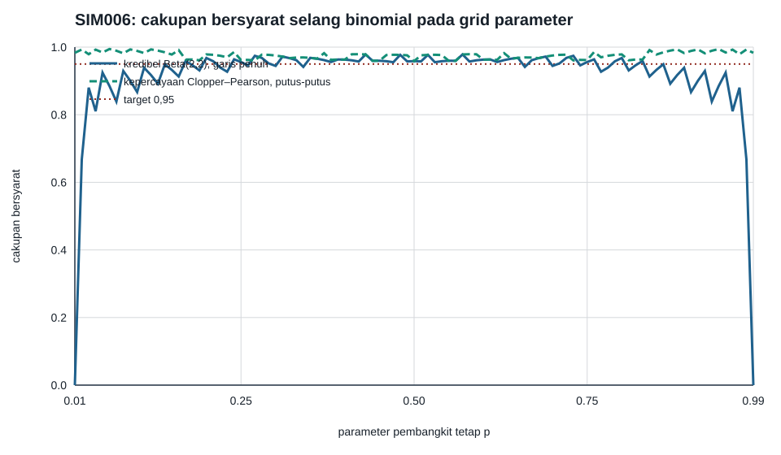

Dua jaminan probabilitas yang berbeda
Laboratorium ini memakai model
Analisis Bayesian menetapkan prior \(p\sim\operatorname{Beta}(2,2)\). Setelah \(X=x\), distribusi posteriornya adalah
Selang kredibel berekor sama (equal-tail) 95% \(C_B(x)=[L_B(x),U_B(x)]\) memotong peluang posterior 0,025 pada setiap ekor. Pernyataan \(P\{p\in C_B(x)\mid X=x\}=0{,}95\) memperlakukan \(x\) sebagai data yang sudah diamati dan \(p\) sebagai peubah acak dalam model posterior; lihat Inferensi Bayesian sebagai pembaruan dan keputusan yang koheren dan Perbandingan Bayesian–frequentist: keputusan, cakupan, dan kalibrasi.
Pembanding frequentist adalah selang kepercayaan dua-sisi Clopper–Pearson 95%, \(C_F(x)=[L_F(x),U_F(x)]\), yang membalik uji ekor binomial eksak. Untuk \(x=0,\ldots,20\), titik ujungnya didefinisikan lengkap oleh
dan
Pernyataan cakupannya menahan \(p\) tetap dan memperlakukan \(X\) sebagai acak:
Kemiripan bentuk dua pasang titik ujung itu tidak menyamakan makna probabilitasnya.
Kontrak komputasi
Generator kanonis adalah simulations/run_c3_simulations.py. Ia memakai:
- Python 3.13.9 dan NumPy 2.4.4;
numpy.random.Generator(PCG64)dengan seed2026082906;- grid parameter tetap \(p=0{,}01,0{,}02,\ldots,0{,}99\);
- 80.000 tarikan binomial pada setiap titik grid untuk memeriksa jumlah eksak;
- 500.000 pasangan \((p,X)\) dari model prior-prediktif untuk memeriksa kalibrasi rata-rata-prior;
- tanpa SciPy, jaringan, atau proses browser.
Karena semua bentuk beta di sini berupa bilangan bulat positif, generator menghitung fungsi distribusi beta dengan identitas jumlah berhingga
Kuantil dibalik dengan tepat 80 langkah biseksi. Nilai ringkasan diserialkan sebagai string desimal berpresisi tetap setelah dikuantisasi, sehingga perbedaan tak-relevan pada digit floating-point terakhir tidak mengubah byte CSV atau receipt.
Cakupan ketika parameter pembangkit ditahan tetap
Untuk setiap \(p\) pada grid, peluang binomial dijumlahkan, bukan hanya diperkirakan:
dan rumus yang sama dipakai untuk \(C_F(p)\). Tabel berikut menampilkan beberapa titik representatif; kolom “eksak” berasal dari jumlah berhingga tersebut.
| \(p\) tetap | Kredibel, eksak | Kredibel, Monte Carlo | Clopper–Pearson, eksak | Clopper–Pearson, Monte Carlo |
|---|---|---|---|---|
| 0,01 | 0,000000 | 0,000000 | 0,983141 | 0,983688 |
| 0,02 | 0,667608 | 0,668800 | 0,992931 | 0,993488 |
| 0,05 | 0,924516 | 0,925350 | 0,984098 | 0,984425 |
| 0,10 | 0,867047 | 0,866463 | 0,988747 | 0,988150 |
| 0,25 | 0,955904 | 0,955113 | 0,961823 | 0,961675 |
| 0,43 | 0,978332 | 0,978513 | 0,978332 | 0,978513 |
| 0,50 | 0,958611 | 0,959438 | 0,958611 | 0,959438 |
Prior simetris dan model binomial menghasilkan kurva simetris terhadap \(p=0{,}5\). Karena itu baris untuk \(0{,}75\), \(0{,}90\), \(0{,}95\), \(0{,}98\), dan \(0{,}99\) mempunyai cakupan eksak yang sama dengan baris pasangannya di atas. Di seluruh 99 titik, cakupan selang kredibel minimum adalah 0 pada \(p=0{,}01\) dan \(0{,}99\), sedangkan maksimum pertamanya 0,9783319525 pada \(p=0{,}43\). Cakupan Clopper–Pearson minimum pada grid adalah 0,9586105347, dicapai pertama kali pada \(p=0{,}50\).

Data seluruh grid: CSV cakupan bersyarat.
Mengapa cakupan nol di \(p=0{,}01\) bukan kontradiksi
Jika \(x=0\), selang kredibel adalah \([0{,}010709966038;\,0{,}219486607453]\). Nilai tetap \(p=0{,}01\) berada di bawah titik ujung kiri itu. Untuk \(x>0\), titik ujung kiri bahkan lebih besar. Akibatnya, tidak satu pun kemungkinan data menghasilkan interval yang memuat \(p=0{,}01\), sehingga cakupannya tepat nol. Namun setiap interval yang telah dihitung tetap memuat tepat 0,95 massa posteriornya sendiri. Kedua fakta itu menjawab pertanyaan probabilitas yang berbeda.
Sebagai pembanding, pada \(x=0\) interval Clopper–Pearson adalah \([0;\,0{,}168433470983]\) dan memuat \(p=0{,}01\). Pada \(x=10\), selang kredibel adalah \([0{,}305878001491;\,0{,}694121998509]\), sedangkan interval Clopper–Pearson adalah \([0{,}271957849561;\,0{,}728042150439]\). Prior Beta(2,2) menarik interval posterior menjauhi batas; prior lain akan memberi titik ujung serta profil cakupan lain. Laboratorium ini tidak menyatakan bahwa satu pilihan prior berlaku universal.
Data titik ujung: CSV semua selang.
Identitas kalibrasi rata-rata-prior
Misalkan \(m(x)\) adalah peluang prior-prediktif. Dengan hukum probabilitas total dan aturan Bayes,
Ini identitas model bersama: mula-mula \(p\) acak menurut Beta(2,2), lalu \(X\) acak bersyarat pada \(p\). Perhitungan berhingga memberi jumlah peluang prior-prediktif 1,000000000000 dan cakupan rata-rata-prior selang kredibel 0,950000000000. Simulasi 500.000 pasangan memberi 0,950392000000.
Interval Clopper–Pearson mempunyai cakupan rata-rata-prior 0,973876917134 pada model bersama yang sama; simulasinya memberi 0,974138000000. Nilai lebih tinggi itu mencerminkan konservatisme akibat data diskret, bukan probabilitas posterior 0,9739 setelah satu \(x\) diamati.
Apa yang boleh dan tidak boleh disimpulkan
- Kalibrasi rata-rata-prior 0,95 tidak menyiratkan cakupan 0,95 untuk setiap \(p\) tetap. Daerah dengan cakupan rendah dapat diimbangi oleh daerah dengan cakupan tinggi di bawah bobot prior.
- Jaminan Clopper–Pearson pada parameter tetap tidak mengubah intervalnya menjadi pernyataan bahwa peluang posterior \(p\) berada di dalamnya adalah 0,95.
- Konservatisme selang kepercayaan tidak otomatis buruk, dan selang kredibel yang lebih pendek tidak otomatis lebih baik. Pilihan prosedur harus mengikuti target keputusan, loss, prior, dan jaminan pengulangan yang benar.
- Satu contoh terkalibrasi tidak menetapkan superioritas universal Bayesian ataupun frequentist.
Assertion dan replay
Semua assertion berikut lulus: setiap interval terurut; massa posterior setiap selang kredibel berbeda dari 0,95 kurang dari \(5\times10^{-13}\); peluang prior-prediktif menjumlah ke satu; identitas rata-rata-prior berbeda dari 0,95 kurang dari \(5\times10^{-13}\); cakupan Clopper–Pearson tidak kurang dari 0,95 di grid; serta simetri kedua kurva terjaga hingga \(5\times10^{-13}\). Selisih absolut Monte Carlo maksimum terhadap jumlah eksak di 99 titik adalah 0,002279528245 untuk selang kredibel dan 0,001611006822 untuk Clopper–Pearson, keduanya di bawah batas assertion 0,008.
Jalankan python simulations/run_c3_simulations.py --write, lalu
python simulations/run_c3_simulations.py --check-only. Mode kedua menghitung
ulang seluruh keluaran dan hard-fail bila inventaris, byte, manifest, atau
receipt berbeda. Ringkasan metrik tersedia pada
CSV kalibrasi.